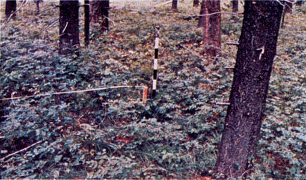
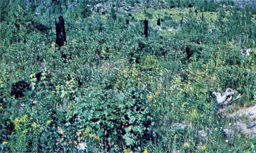

Fire is generally carried in the surface fuels that are made up of litter cast by the shrubs and the grasses or forbs in the understory. The fires are generally not very intense because surface fuel loads are light, the shrubs are young with little dead material, and the foliage contains little volatile material. Usually shrubs are short and almost totally cover the area. Young, green stands with no dead wood would qualify: laurel, vine maple, alder, or even chaparral, manzanita, or chamise.

Photo 13. Green, low shrub fields within timber stands or without
overstory are typical. Example is Douglas-fir–snowberry habitat
type.

Photo 14. Regeneration shrublands after fire or other disturbances
have a large green fuel component, Sundance Fire, Pack River
Area, Idaho.